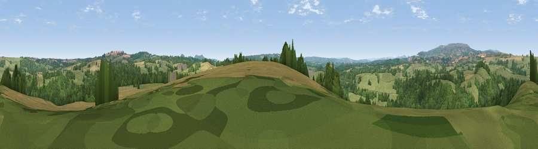

Viewpoint near Neen Sollars
#19190 in England · top 46% of its area beats it · near Neen SollarsWhere it is
The exact computed spot (SO 66975 72275). Click the marker for map links.
The view, rendered

A 360° render of this exact spot computed from the terrain model, tree cover and land cover — summer colours, afternoon light, calibrated against photographs of famous viewpoints. Real trees, hedges and buildings will differ in detail.
The panorama
Grey silhouette: terrain skyline in each direction (720 bearings, Earth curvature and refraction included). Dashed green: skyline with trees (+15 m) and buildings (+8 m) as obstacles. Blue strip: how far the ground is visible on each bearing.
Where the view opens
Wedge length = distance to the farthest visible ground on that bearing (vegetation-aware). Rings at 10, 25 and 50 km.
What fills the view
47% grassland · 36% woodland · 16% cropland
Angular shares of the visible panorama (visual magnitude), not map area. Landscape diversity 0.45 (0–1 Shannon).
Key numbers
More beautiful places nearby
The staircase of upgrades: each row has a higher view potential than everything closer. Driving times are estimates from straight-line distance, calibrated against real road routing — check an actual route before setting out.
| Place | Direction | Drive | Score |
|---|---|---|---|
| Viewpoint near Mamble | SE · 4 km | ~8 min | 61.3 |
| Viewpoint near Bayton | ENE · 4 km | ~9 min | 67.5 |
| Viewpoint near Upper Rochford | S · 6 km | ~14 min | 71.0 |
| Viewpoint near Hope Bagot | W · 7 km | ~15 min | 73.7 |
| Magpie Hill | NW · 8 km | ~15 min | 75.7 |
| Viewpoint near Cleehill | WNW · 9 km | ~17 min | 82.3 |
| Titterstone Clee | NW · 10 km | ~19 min | 83.8 |
| North Hill | SSE · 28 km | ~44 min | 86.8 |
52.34754, -2.48623 · source: screening · position refined by local search. Computed location — check access rights before visiting.